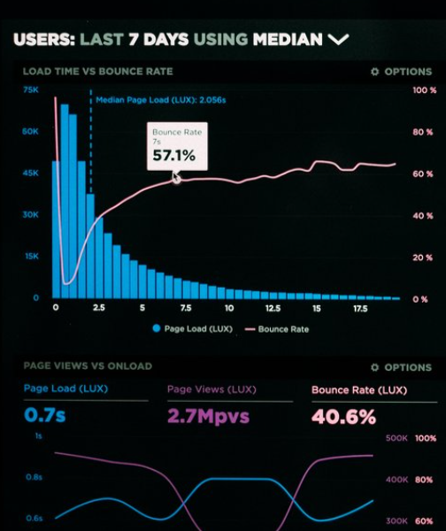
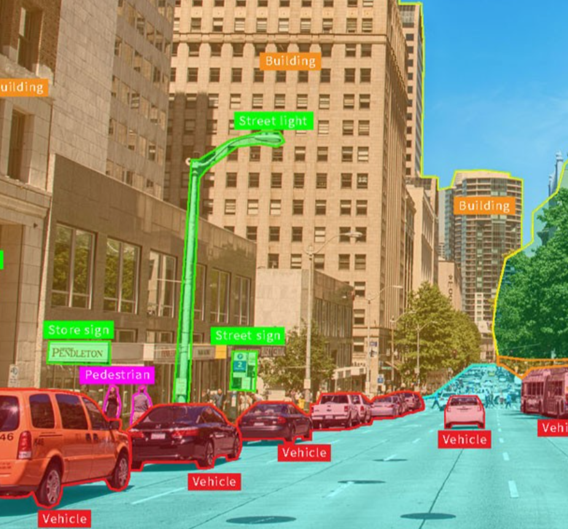
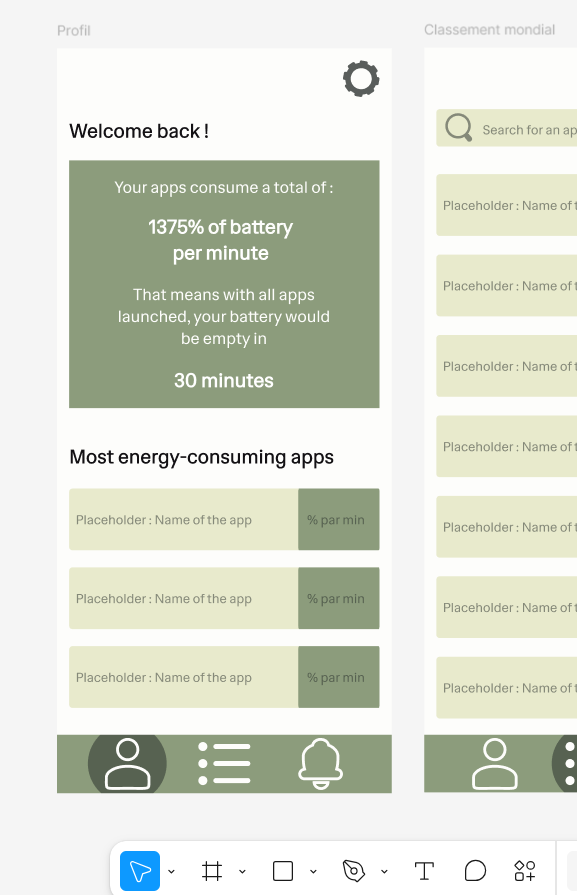

Nos Formations
À l’EFREI, nos formations préparent les ingénieurs de demain à relever les défis technologiques et sociétaux.
Alliant excellence académique, innovation et ouverture internationale, elles offrent un socle solide et évolutif.
Du numérique aux systèmes intelligents, chaque parcours est conçu pour révéler le potentiel de chacun.
Découvrez des programmes pensés pour construire votre avenir.
Nos Bachelors
- Bachelor Développeur web & IA
- Bachelor Cybersecurité & réseaux

- Bachelor Cybersécurité & ethical
- Bachelor informatique
Il existe deux parcours possibles pour chacun de ces bachelors : le parcours campus, qui se déroule entièrement sur le campus de l'EFREI, et le parcours alternance, qui combine des périodes de formation en entreprise et des périodes de cours sur le campus.
Programme Grandes Ecoles
Les deux premières années du programme correspondent à la préparation intégrée, marquée par un cursus identique pour tous. La troisième année ne correspond pas encore à la spécialisation, mais les étudiants passent un semestre à l'étranger. La spécialisation intervient à partir de la quatrième année parmi les options suivantes :
-
Bachelor Développeur web & IA
- Cycle ingénieur Informatique & IA
- Cycle ingénieur Cybersécurité & réseaux
- Cycle ingénieur Cybersécurité & ethical
- Cycle ingénieur informatique
- Bachelor Cybersecurité & réseaux
- Bachelor Cybersécurité & ethical
- Bachelor informatique
Il existe deux parcours possibles pour chacun de ces bachelors : le parcours campus, qui se déroule entièrement sur le campus de l'EFREI, et le parcours alternance, qui combine des périodes de formation en entreprise et des périodes de cours sur le campus.
Les Projets

Analyse de données

Computer Vision Capture the flag

Développement d'applications Création de jeux
Base de données
Opportunités de Stage
Stage ouvrier
En première année de cycle ingénieur, les étudiants effectuent un stage ouvrier d'une durée de 4 semaines. Ce stage permet aux étudiants de découvrir le monde du travail et de se familiariser avec les réalités de l'entreprise.
Stage commercial
En deuxième année de cycle ingénieur, les étudiants effectuent un stage commercial d'une durée de 4 semaines. Ce stage permet aux étudiants de découvrir les métiers du commerce et de la vente, et de développer leurs compétences en communication et en négociation.
Stage d'ingénieur
En quatrième année de cycle ingénieur, les étudiants effectuent un stage d'ingénieur d'une durée de 12 semaines. Ce stage permet aux étudiants de mettre en pratique les compétences acquises au cours de leur formation, dans le domaine de spécialisation choisi, et de se préparer à leur future carrière d'ingénieur.
Stage de fin de cursus
En cinquième année de cycle ingénieur, les étudiants effectuent un stage de fin de cursus d'une durée de 24 semaines. Ce stage est la dernière étape avant l'obtention du diplôme d'ingénieur, et constitue la dernière ligne droite.
L'alternance
L'alternance est un dispositif qui permet aux étudiants de combiner la formation théorique avec une expérience pratique dans une entreprise.
Nous contacter : Formulaire de contact
Notre Equipe Pédagogique
En première année de cycle ingénieur, les étudiants effectuent un stage ouvrier d'une durée de 4 semaines. Ce stage permet aux étudiants de découvrir le monde du travail et de se familiariser avec les réalités de l'entreprise.
En première année de cycle ingénieur, les étudiants effectuent un stage ouvrier d'une durée de 4 semaines. Ce stage permet aux étudiants de découvrir le monde du travail et de se familiariser avec les réalités de l'entreprise.
En première année de cycle ingénieur, les étudiants effectuent un stage ouvrier d'une durée de 4 semaines. Ce stage permet aux étudiants de découvrir le monde du travail et de se familiariser avec les réalités de l'entreprise.
En première année de cycle ingénieur, les étudiants effectuent un stage ouvrier d'une durée de 4 semaines. Ce stage permet aux étudiants de découvrir le monde du travail et de se familiariser avec les réalités de l'entreprise.
Et Après ?
Ces entreprises recrutent !
+2000 entreprises partenaires
98% d'insertion professionnelle dans les 2 mois suivant la fin des études.